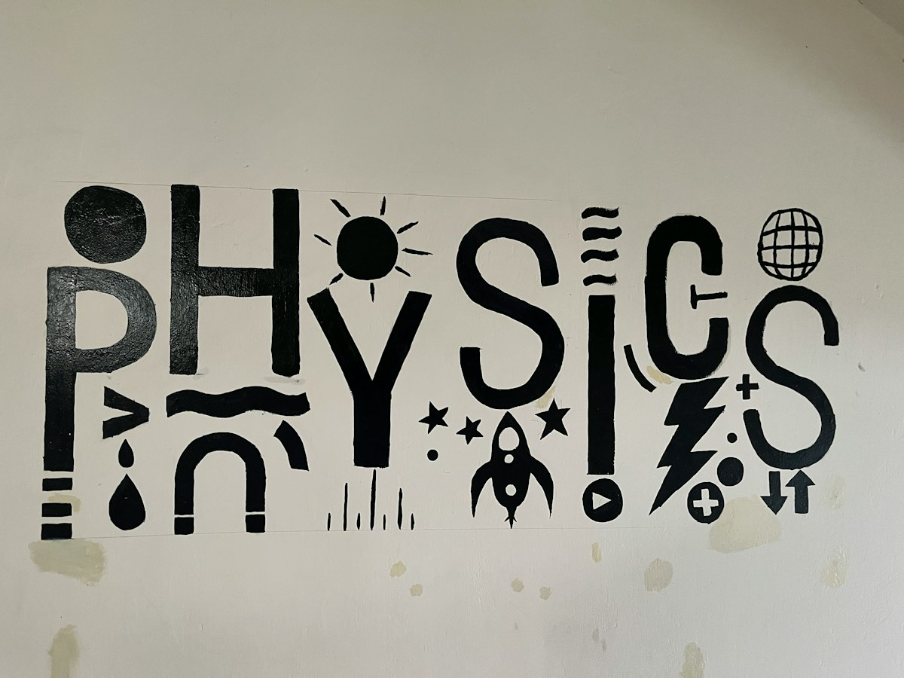

The Physics Prior Can Outvote the Measurement It Was Built to Fix
Reconstruction from sparse, noisy particle images turns on a weighting choice that no benchmark shows

A wind tunnel measures droplets
A wind tunnel measures droplets. Atomized oil or saline is injected upstream. A laser sheet cuts a bright plane through the test section, and a camera records where each speckle sits between successive pulses. The air's velocity is an inference from the particles small enough to follow it, and each of those steps loses something. In practice the sheet is never quite flat and the seeding is never quite uniform.
On 23 November, phys.org carried a report on a method aimed at that gap. It describes a network guided by the equations that govern fluid motion, asked to rebuild a flow field from input that is sparse and noisy. What the report itself specifies about mechanism, I cannot say. As a claim about this family of methods, the promise is that the physics supplies what the pixels cannot. Whether that is an advance or an expensive interpolation depends on one design choice: which term wins when the data and the equation disagree.
How a physics prior enters the machine
There are two ways to make a network respect a partial differential equation, and they are not the same bet. The cheap one puts the equation in the loss. The network outputs a velocity field; one term rewards matching the measured pixels, another rewards a small residual when that field is pushed through the governing equations. The other way builds the constraint into the output, so the network cannot express a field that violates it. The first can be argued with. The second cannot.
The headline says physics-guided, a phrase that covers both designs, and the difference is not cosmetic. A soft constraint is a weight, and a weight turns under pressure from whoever is tuning it. A hard constraint removes the option to tune, and with it the option to admit the physics was wrong. Every group in this field calls its own weighting scheme 'tuned carefully'.
What the loss is trading
The premise of the framing is that the measurements are noisy. A squared-error term against noisy pixels pulls the reconstruction toward the noise, since minimizing against samples of a noisy field does that by definition. The physics term pulls the other way, toward the smooth, mass-conserving solution the equations prefer. The weight buys smoothness. Whether it buys accuracy is a separate question, settled by held-out data and not by the residual plot. A shock front or a separation line is exactly the kind of real structure that reads as noise to a residual.
Compressible flow in a curved duct separates near the inner wall, and the separated pocket is unsteady and small relative to the plane the camera sees. A model carrying a heavy physics weight has no reason to spend error there. That pocket is where the aerodynamic answer lives, and it is where the reconstruction loses the experiment without recording the loss.
The best case the other side can make
The strongest version of the other side is straightforward. Where measurements are genuinely sparse, plain interpolation has no opinion about mass conservation and a physics term does. As I read this literature, the benchmark is a truth field, which the user does not have. On that ground a heavy prior is doing real work, and calling it a bias is a description of the risk rather than a measurement of it.
The answer to that objection is the word benchmark. An error number computed against a known truth field tells you the method interpolates well in the regime the authors chose to test. It says little about the case that decides a laboratory measurement: the flow where the equations used are incomplete for the geometry. A prior that matches the truth field in the test set will also overwrite a real anomaly the truth field does not contain.
What remains unknown here
Everything above is reasoning about a family of methods, not a verdict on this result. The facts I would need are specific. What data does the network see, and is the physics term a penalty in the loss or a property of the architecture? What weight does it carry, and what is the reconstruction scored against? Does the output include an uncertainty, or only a field?
I have the headline, not the paper.
Two of those answers change the assessment completely. If the physics is structural, baked into what the network may output, then it cannot be tuned into honesty and cannot be tuned into error. That version is a claim about the flow, and the claim deserves checking against the same flow measured another way. If the physics is a penalty, the weight sweep is the result. A report of one weight, with no sweep around it, has reported a tuning session.
What the method actually buys
Set the worries aside and something real is on offer. The expensive part of a flow measurement is rarely the algorithm. It is the optical access, the seeding, and the hours the facility runs for one good plane. A reconstruction that tolerates fewer pixels and more noise changes what a facility can afford to learn from a single run. It also changes which run is worth doing. A handful of light sheets replaces a dense scan.
The trade has a cost, and the cost falls on the habit of checking. The reason wind-tunnel culture survived is that somebody measured the same quantity twice. Once by the optical method, once by a pitot traverse or a balance. A reconstruction that prints a plausible field at every pixel makes the second measurement look redundant, right up to the quarter when it is not. A tuned prior makes every pixel plausible. Plausibility is a lower standard than accuracy, and the network optimizes the first one.
What a careful reader should ask for
Three asks, all of them reasonable for a lab to satisfy. The first is the weight sweep: reconstruction error and residual error plotted against the physics weight, on the same axes. A report that gives only the operating point has chosen the answer. The second ask is an error measured against a quantity nobody put in the loss, such as drag on the model or a hot-wire trace. The third is a noise level for the input, stated in the same units as the reported error.
The second ask is the one that separates the two readings above. A method that survives an independent force measurement is evidence that the prior did not override real disagreement. A method that only survives comparison with a smooth synthetic field is evidence that it interpolates, which is still useful and is a different product. The label should be honest about which of the two it is.
The alignment nobody re-checks
The practical consequence for anyone who runs experiments is small and concrete. Nothing in this family of methods removes the need for a second instrument; it moves where a second instrument is worth putting. Reconstruction from sparse, noisy data is a better use of a laboratory's budget than another camera, provided somebody still measures drag. That proviso is the part a benchmark cannot test.
One detail from the opening is worth keeping. The reconstruction never sees the flow. It sees scattered light from droplets assumed small enough to follow it, under an alignment nobody re-checks. A method that gets better at drawing conclusions from that light inherits every assumption in the alignment. Nobody tunes the laser with a loss function.